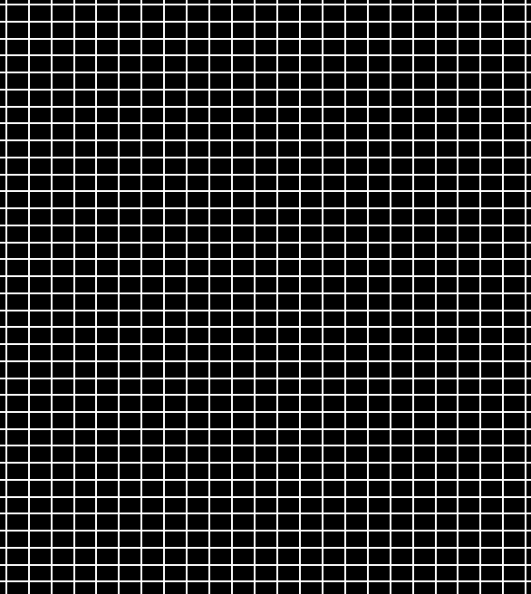
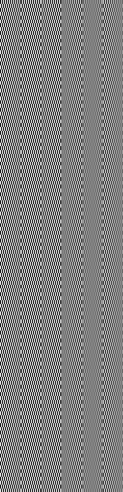
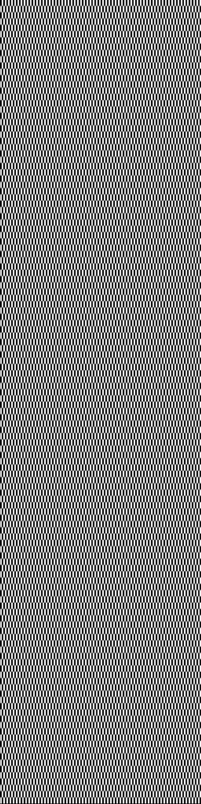

brighten on "shed.bmp" (resulting images not in original resolution)
brighten on "flower.bmp"
from left to right, factor = 0, 0.5, 1, 2


3.2.1 brighten
brighten on "shed.bmp" (resulting images not in original resolution)
brighten on "flower.bmp"
from left to right, factor = 0, 0.5, 1, 2
3.2.2 change contrast
contrast on "shed.bmp" (resulting images not in original resolution)

contrast on "flower.bmp"
from left to right, factor = -1, 0, 0.5, 1, 2


3.2.3 change saturation
saturation on "shed.bmp" (resulting images not in original resolution)

saturation on "flower.bmp"
from left to right, factor = -1, 0, 0.5, 1, 2


3.2.4 change gamma
gamma on "shed.bmp" (resulting images not in original resolution)
gamma on "flower.bmp"
from left to right, factor = 0, 0.5, 1, 2


3.2.5 crop
crop on "shed.bmp" (resulting images not in original resolution)
cropping "flower.bmp"
original

cropped (x = 60, y = 40, w = 60, h = 60)

cropping one punch man
original
cropped (x = 150, y = 0, w = 160, h = 200)
3.3 quantize & dithering
dithering on "flower.bmp" (resulting images not in original resolution)

same table as above, but with the images at their original resolution
from top to bottom: quantize, random dither, floyd-steinberg dither
from left to right: nbits = 1, 2, 3, 4, 5


3.4.1 blur
for edge pixels in convolution, we use mirrored pixels. in other words, if
the pixel is on the left edge, then we will use the right pixel in place of the left
pixel.
blur on "mandrill.bmp" (resulting images not in original resolution)
blur on "flower.bmp" (resulting images not in original resolution)
from left to right, kernel width = original, 3, 5, 7, 11, 19

3.4.2 sharpen
sharpening hippo (top = original, bottom = sharpened)
sharpening "flower.bmp" (top = original, bottom = sharpened)
3.4.3 edge detection
threshold used = 60
edge detect checkerboard


edge detect wave

3.5.1 scale
original

scaled to 300x300 (minimize)
from left to right: nearest neighbor, hat, mitchell
- as you can see, our mitchell function did not work as expected. we implemented
mitchell by using the same method as hat, except we replaced the hat function with
the mitchell function. we also accounted for the differences in width between
hat and mitchell. however, the image generated is not the intended result and
we don't know why.
scaled to 250x1000 (minimize x, magnify y)
from left to right: nearest neighbor, hat, mitchell


scaled to 1000x1000 (magnify)
from top to bottom: nearest neighbor, hat, mitchell
3.5.1 shift
from top to bottom, left to right:
original, nearest neighbor
hat, mitchell
shifted 10.5 pixels right
3.6 fun filter
for fun, we implemented a simple rotation that will always rotate an image
50 degrees counterclockwise.